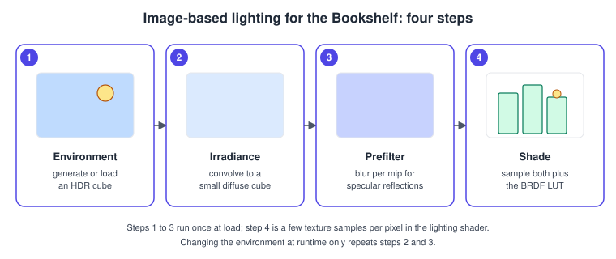
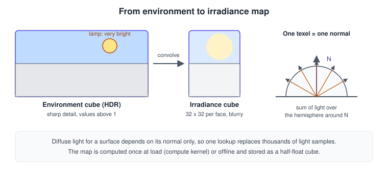
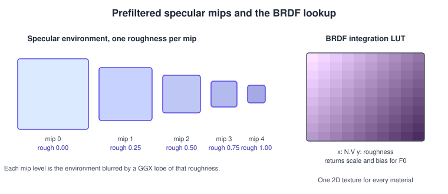
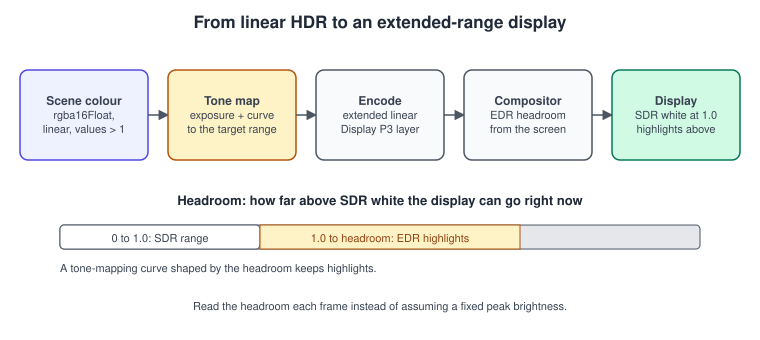

Image-Based Lighting and HDR in Metal
|
This content was generated with the assistance of AI and should be verified against the official documentation before being relied on in production. |
A desk lamp is a point light; the room around it is not. Real surfaces are lit by everything they can see: the window, the ceiling, the bright wall. Image-based lighting (IBL) captures that surrounding light in a texture, an environment map, and uses it as a light source. Two pre-computed maps (one for diffuse light, one for glossy reflections) plus a small lookup table turn the physically based shading of PBR Materials into a handful of texture reads per pixel. The environment is HDR: sky and lamp are far brighter than white paper, and the renderer must keep those values until the very last step. That last step, getting values above white onto a display that can show them, is extended dynamic range (EDR) output in Apple’s terminology, and it is the second half of this page.
The facts were checked in November 2026. The versions documented are Metal 4 on the 26 operating systems and Metal Shading Language 4.1 on the 27 operating systems (Xcode 27); everything here works on Metal 3 as well, and the setup code below uses the Metal 3 command buffer for brevity (the compute kernels are identical on Metal 4, which binds their resources through an MTL4ArgumentTable, see Hello Triangle with Metal 4). Writing to half-float cube textures from compute kernels is covered by the Metal Feature Set Tables for the target GPU family; EDR output needs a display that supports it (current iPhones, iPads and Macs with XDR or HDR-capable displays, Apple Vision Pro) and the layer settings shown below.
In the running example this page sits between PBR with a shadow map and the many-books stage: the shelf gets an environment (warm room, bright lamp) that lights the books and appears in the glossy board. The same maps are reused by the ray-traced reflections in Ray Tracing in Metal as the fallback colour for rays that miss. General background is in Lighting and Shading Models and Color Spaces, HDR and Tone Mapping; the same techniques in OpenGL are in PBR Basics and Antialiasing and HDR.
The idea in one picture

-
Environment: a cube texture in
rgba16Float, either generated procedurally (as below), baked from a capture, or decoded from an equirectangular HDR image offline. Values above 1.0 are the point: the lamp is thousands of times brighter than the walls. -
Irradiance map: for each direction
N, the cosine-weighted sum of the environment over the hemisphere aroundN. A diffuse surface reads it with its normal. It has no detail, so 32 by 32 texels per face is plenty. -
Prefiltered specular map: the environment blurred by the specular lobe for a given roughness, stored one roughness per mip level. A glossy surface reads it with the reflection vector and picks the mip from its roughness.
-
BRDF lookup table: a 2D texture indexed by the angle between normal and view vector and by roughness, returning a scale and bias for the Fresnel term. It does not depend on the environment and is computed once for every material.
This is the split-sum approximation that real-time engines use. It assumes the surface is viewed head-on when it prefilters, so grazing reflections are slightly too sharp, a trade-off worth the cost.
Irradiance, visually

Irradiance is the integral of incoming light weighted by the cosine of the angle to the normal. Written as math, for a normal \( n \) and the environment radiance \( L(\omega) \):
\[ E(n) = \int_{\Omega} L(\omega)\,\max(n \cdot \omega, 0)\,d\omega \]
The diffuse term of the surface is then \( \frac{\text{ albedo }}{\pi} E(n) \). The kernel below evaluates the integral with a regular grid over the hemisphere, which is simple and accurate enough for a 32 by 32 map computed once.
The prefiltered chain

Mip 0 is the sharp environment (roughness 0); each next mip stores a rougher blur. Because blurry images need few texels, the chain is also cheap in memory. Shading selects the mip with level(roughness * (mipCount - 1)) using trilinear filtering, so intermediate roughness values blend between neighbours.
Building the maps with compute kernels
All four maps come from compute kernels. The Metal Shading Language writes to a cube texture through texturecube<float, access::write> with a face index, and the Swift side creates the textures with shader-write usage.
MSL: environment, irradiance, prefilter and BRDF LUT
#include <metal_stdlib>
using namespace metal;
constant float PI = 3.14159265359;
// Direction of a cube texel. Metal cube faces are +X, -X, +Y, -Y, +Z, -Z and the texel
// coordinate has its origin at the top left, so v grows downwards.
float3 cubeDirection(uint face, float2 uv) { // uv in -1 ... 1
switch (face) {
case 0: return normalize(float3( 1.0, -uv.y, -uv.x));
case 1: return normalize(float3(-1.0, -uv.y, uv.x));
case 2: return normalize(float3( uv.x, 1.0, uv.y));
case 3: return normalize(float3( uv.x, -1.0, -uv.y));
case 4: return normalize(float3( uv.x, -uv.y, 1.0));
default: return normalize(float3(-uv.x, -uv.y, -1.0));
}
}
constexpr sampler cubeSampler(filter::linear, mip_filter::linear, address::clamp_to_edge);
// 1. Procedural environment: a warm room with a window and a very bright lamp.
kernel void make_environment(texturecube<float, access::write> env [[texture(0)]],
uint3 gid [[thread_position_in_grid]]) // x, y, face
{
uint size = env.get_width();
if (gid.x >= size || gid.y >= size || gid.z >= 6) { return; }
float2 uv = (float2(gid.xy) + 0.5) / float(size) * 2.0 - 1.0;
float3 d = cubeDirection(gid.z, uv);
float3 ceiling = float3(0.85, 0.80, 0.70);
float3 floorColor = float3(0.20, 0.13, 0.08);
float3 color = mix(floorColor, ceiling, smoothstep(-0.4, 0.8, d.y)) * 0.6;
float window = smoothstep(0.92, 0.95, dot(d, normalize(float3(-0.6, 0.4, 0.7))));
color += float3(0.7, 0.85, 1.0) * 4.0 * window; // daylight, above white
float lamp = smoothstep(0.995, 0.998, dot(d, normalize(float3(0.5, 0.7, 0.3))));
color += float3(1.0, 0.75, 0.45) * 80.0 * lamp; // the desk lamp
env.write(float4(color, 1.0), uint2(gid.xy), gid.z);
}
// 2. Diffuse irradiance: cosine-weighted integral over the hemisphere around N.
kernel void make_irradiance(texturecube<float> env [[texture(0)]],
texturecube<float, access::write> irradiance [[texture(1)]],
uint3 gid [[thread_position_in_grid]])
{
uint size = irradiance.get_width();
if (gid.x >= size || gid.y >= size || gid.z >= 6) { return; }
float2 uv = (float2(gid.xy) + 0.5) / float(size) * 2.0 - 1.0;
float3 n = cubeDirection(gid.z, uv);
float3 up = abs(n.y) < 0.999 ? float3(0, 1, 0) : float3(1, 0, 0);
float3 right = normalize(cross(up, n));
up = cross(n, right);
float3 sum = 0.0;
float count = 0.0;
const float delta = 0.05;
for (float phi = 0.0; phi < 2.0 * PI; phi += delta) {
for (float theta = 0.0; theta < 0.5 * PI; theta += delta) {
float3 t = float3(sin(theta) * cos(phi), sin(theta) * sin(phi), cos(theta));
float3 dir = t.x * right + t.y * up + t.z * n;
sum += env.sample(cubeSampler, dir, level(2)).rgb * cos(theta) * sin(theta);
count += 1.0;
}
}
float3 result = PI * sum / count;
irradiance.write(float4(result, 1.0), uint2(gid.xy), gid.z);
}
// 3. Specular prefilter: GGX importance sampling, one dispatch per mip level.
float radicalInverse(uint bits) {
bits = (bits << 16u) | (bits >> 16u);
bits = ((bits & 0x55555555u) << 1u) | ((bits & 0xAAAAAAAAu) >> 1u);
bits = ((bits & 0x33333333u) << 2u) | ((bits & 0xCCCCCCCCu) >> 2u);
bits = ((bits & 0x0F0F0F0Fu) << 4u) | ((bits & 0xF0F0F0F0u) >> 4u);
bits = ((bits & 0x00FF00FFu) << 8u) | ((bits & 0xFF00FF00u) >> 8u);
return float(bits) * 2.3283064365386963e-10;
}
float2 hammersley(uint i, uint n) { return float2(float(i) / float(n), radicalInverse(i)); }
float3 importanceSampleGGX(float2 xi, float3 n, float roughness) {
float a = roughness * roughness;
float phi = 2.0 * PI * xi.x;
float cosTheta = sqrt((1.0 - xi.y) / (1.0 + (a * a - 1.0) * xi.y));
float sinTheta = sqrt(1.0 - cosTheta * cosTheta);
float3 h = float3(sinTheta * cos(phi), sinTheta * sin(phi), cosTheta);
float3 up = abs(n.z) < 0.999 ? float3(0, 0, 1) : float3(1, 0, 0);
float3 tangent = normalize(cross(up, n));
float3 bitangent = cross(n, tangent);
return normalize(tangent * h.x + bitangent * h.y + n * h.z);
}
struct PrefilterParams { float roughness; uint sampleCount; };
kernel void prefilter_environment(texturecube<float> env [[texture(0)]],
texturecube<float, access::write> target [[texture(1)]], // one mip as a cube view
constant PrefilterParams& params [[buffer(0)]],
uint3 gid [[thread_position_in_grid]])
{
uint size = target.get_width();
if (gid.x >= size || gid.y >= size || gid.z >= 6) { return; }
float2 uv = (float2(gid.xy) + 0.5) / float(size) * 2.0 - 1.0;
float3 n = cubeDirection(gid.z, uv);
float3 v = n; // split-sum assumes V = N
float3 sum = 0.0;
float weight = 0.0;
for (uint i = 0; i < params.sampleCount; ++i) {
float3 h = importanceSampleGGX(hammersley(i, params.sampleCount), n, params.roughness);
float3 l = normalize(2.0 * dot(v, h) * h - v);
float nDotL = saturate(dot(n, l));
if (nDotL > 0.0) {
sum += env.sample(cubeSampler, l, level(0)).rgb * nDotL;
weight += nDotL;
}
}
target.write(float4(sum / max(weight, 1e-4), 1.0), uint2(gid.xy), gid.z);
}
// 4. BRDF integration LUT: scale and bias for F0, indexed by N.V and roughness.
float geometrySchlickGGX(float nDotV, float roughness) {
float k = (roughness * roughness) / 2.0;
return nDotV / (nDotV * (1.0 - k) + k);
}
kernel void make_brdf_lut(texture2d<float, access::write> lut [[texture(0)]],
uint2 gid [[thread_position_in_grid]])
{
uint size = lut.get_width();
if (gid.x >= size || gid.y >= size) { return; }
float nDotV = (float(gid.x) + 0.5) / float(size);
float roughness = (float(gid.y) + 0.5) / float(size);
float3 v = float3(sqrt(1.0 - nDotV * nDotV), 0.0, nDotV);
float3 n = float3(0.0, 0.0, 1.0);
float a = 0.0, b = 0.0;
const uint sampleCount = 256;
for (uint i = 0; i < sampleCount; ++i) {
float3 h = importanceSampleGGX(hammersley(i, sampleCount), n, roughness);
float3 l = normalize(2.0 * dot(v, h) * h - v);
float nDotL = saturate(l.z), nDotH = saturate(h.z), vDotH = saturate(dot(v, h));
if (nDotL > 0.0) {
float g = geometrySchlickGGX(nDotL, roughness) * geometrySchlickGGX(nDotV, roughness);
float gVis = g * vDotH / (nDotH * nDotV);
float fc = pow(1.0 - vDotH, 5.0);
a += (1.0 - fc) * gVis;
b += fc * gVis;
}
}
lut.write(float4(a / float(sampleCount), b / float(sampleCount), 0.0, 1.0), gid);
}Source: Metal Shading Language Specification, texturecube and texture functions and Performing calculations on a GPU
Details that matter:
-
The irradiance kernel samples the environment at a lower mip (
level(2)) instead of mip 0. Sampling the blurred level removes the fireflies a very bright lamp would cause with a fixed hemisphere grid, a standard trick. The environment therefore needs a mip chain (generateMipmapsin a blit pass after step 1). -
The lamp has a value of 80, the window 4. With an 8-bit target the lamp would clip to white and its energy would be lost;
rgba16Floatholds values up to 65504. -
The prefilter kernel must read the environment with trilinear filtering and write into a single mip level of the output; the Swift code below creates a texture view for each mip.
-
The BRDF table is two numbers per texel and does not depend on the scene. Store it as
rg16Float; many projects ship it as a precomputed texture instead.
Swift: creating and baking the maps
import Metal
final class EnvironmentBaker {
let device: MTLDevice
let queue: MTLCommandQueue
private let makeEnvironment: MTLComputePipelineState
private let makeIrradiance: MTLComputePipelineState
private let prefilter: MTLComputePipelineState
private let makeLUT: MTLComputePipelineState
private(set) var environment: MTLTexture!
private(set) var irradiance: MTLTexture!
private(set) var prefiltered: MTLTexture!
private(set) var brdfLUT: MTLTexture!
var prefilteredMipCount: Int { prefiltered.mipmapLevelCount }
init(device: MTLDevice, queue: MTLCommandQueue, library: MTLLibrary) throws {
self.device = device
self.queue = queue
func pipeline(_ name: String) throws -> MTLComputePipelineState {
try device.makeComputePipelineState(function: library.makeFunction(name: name)!)
}
makeEnvironment = try pipeline("make_environment")
makeIrradiance = try pipeline("make_irradiance")
prefilter = try pipeline("prefilter_environment")
makeLUT = try pipeline("make_brdf_lut")
}
private func cube(size: Int, mipped: Bool, label: String) -> MTLTexture {
let d = MTLTextureDescriptor.textureCubeDescriptor(pixelFormat: .rgba16Float,
size: size, mipmapped: mipped)
d.usage = [.shaderRead, .shaderWrite]
d.storageMode = .private
let t = device.makeTexture(descriptor: d)!
t.label = label
return t
}
/// Generates all maps. Blocks until the GPU has finished: call it while loading.
func bake() {
environment = cube(size: 256, mipped: true, label: "Environment")
irradiance = cube(size: 32, mipped: false, label: "Irradiance")
prefiltered = cube(size: 128, mipped: true, label: "Prefiltered environment")
let lutDescriptor = MTLTextureDescriptor.texture2DDescriptor(pixelFormat: .rg16Float,
width: 128, height: 128,
mipmapped: false)
lutDescriptor.usage = [.shaderRead, .shaderWrite]
lutDescriptor.storageMode = .private
brdfLUT = device.makeTexture(descriptor: lutDescriptor)!
brdfLUT.label = "BRDF LUT"
let commandBuffer = queue.makeCommandBuffer()!
commandBuffer.label = "Bake IBL"
// 1. Environment, then its mip chain.
dispatchCube(commandBuffer, makeEnvironment, size: 256) { $0.setTexture(self.environment, index: 0) }
let blit = commandBuffer.makeBlitCommandEncoder()!
blit.generateMipmaps(for: environment)
blit.endEncoding()
// 2. Irradiance.
dispatchCube(commandBuffer, makeIrradiance, size: 32) {
$0.setTexture(self.environment, index: 0)
$0.setTexture(self.irradiance, index: 1)
}
// 3. Prefiltered chain, one dispatch per mip level, each writing to a cube view of that level.
let mips = prefiltered.mipmapLevelCount
for level in 0..<mips {
let size = max(prefiltered.width >> level, 1)
let view = prefiltered.makeTextureView(pixelFormat: .rgba16Float, textureType: .typeCube,
levels: level..<(level + 1), slices: 0..<6)!
var params = PrefilterParams(roughness: Float(level) / Float(max(mips - 1, 1)),
sampleCount: level == 0 ? 1 : 256)
dispatchCube(commandBuffer, prefilter, size: size) {
$0.setTexture(self.environment, index: 0)
$0.setTexture(view, index: 1)
$0.setBytes(¶ms, length: MemoryLayout<PrefilterParams>.stride, index: 0)
}
}
// 4. BRDF LUT.
let encoder = commandBuffer.makeComputeCommandEncoder()!
encoder.setComputePipelineState(makeLUT)
encoder.setTexture(brdfLUT, index: 0)
encoder.dispatchThreads(MTLSize(width: 128, height: 128, depth: 1),
threadsPerThreadgroup: MTLSize(width: 8, height: 8, depth: 1))
encoder.endEncoding()
commandBuffer.commit()
commandBuffer.waitUntilCompleted()
}
private func dispatchCube(_ commandBuffer: MTLCommandBuffer, _ pipeline: MTLComputePipelineState,
size: Int, bind: (MTLComputeCommandEncoder) -> Void) {
let encoder = commandBuffer.makeComputeCommandEncoder()!
encoder.setComputePipelineState(pipeline)
bind(encoder)
encoder.dispatchThreads(MTLSize(width: size, height: size, depth: 6),
threadsPerThreadgroup: MTLSize(width: min(size, 8), height: min(size, 8), depth: 1))
encoder.endEncoding()
}
}
struct PrefilterParams {
var roughness: Float
var sampleCount: UInt32
}Source: MTLTexture and MTLBlitCommandEncoder
Notes on the Swift:
-
Cube textures are created with
textureCubeDescriptor(pixelFormat:size:mipmapped:); a cube must be square, and.shaderWriteis needed for the compute writes.storageMode = .privatekeeps the maps GPU-only, which is the right place for them on every device. -
The grid size of a dispatch uses the face as the third dimension, so one dispatch covers all six faces.
-
dispatchThreadshandles sizes that are not multiples of the threadgroup size, which is why the kernels also test the bounds. -
The compute encoders are serial on one command buffer; Metal tracks hazards between them for tracked textures, so the irradiance pass waits for the environment mips. With a Metal 4 command buffer or untracked resources you add barriers explicitly, see Synchronization and Barriers.
-
Baking at load is a few milliseconds on current devices. Cache the result if the environment is fixed, and re-run steps 2 and 3 only when it changes.
Shading with the maps
struct IBLUniforms {
float3 cameraPosition;
float prefilteredMipCount;
float exposure;
};
constexpr sampler iblSampler(filter::linear, mip_filter::linear, address::clamp_to_edge);
constexpr sampler lutSampler(filter::linear, address::clamp_to_edge);
float3 fresnelSchlickRoughness(float cosTheta, float3 f0, float roughness) {
return f0 + (max(float3(1.0 - roughness), f0) - f0) * pow(clamp(1.0 - cosTheta, 0.0, 1.0), 5.0);
}
float3 evaluateIBL(float3 position, float3 normal, float3 albedo, float metallic, float roughness, float ao,
texturecube<float> irradianceMap, texturecube<float> prefilteredMap,
texture2d<float> brdfLUT, constant IBLUniforms& u)
{
float3 n = normalize(normal);
float3 v = normalize(u.cameraPosition - position);
float nDotV = saturate(dot(n, v));
float3 r = reflect(-v, n);
float3 f0 = mix(float3(0.04), albedo, metallic);
float3 f = fresnelSchlickRoughness(nDotV, f0, roughness);
float3 kD = (1.0 - f) * (1.0 - metallic);
float3 diffuse = irradianceMap.sample(iblSampler, n).rgb * albedo * kD;
float3 prefiltered = prefilteredMap.sample(iblSampler, r,
level(roughness * (u.prefilteredMipCount - 1.0))).rgb;
float2 brdf = brdfLUT.sample(lutSampler, float2(nDotV, roughness)).rg;
float3 specular = prefiltered * (f0 * brdf.x + brdf.y);
return (diffuse + specular) * ao * u.exposure;
}The function returns linear HDR radiance; it never clamps. It is added to the direct lighting of the lamp (see Lighting Fundamentals) and the result goes to a rgba16Float colour target, which is the input of the next section. The sampler needs mip_filter::linear for the prefiltered map: with mip_filter::nearest the roughness steps are visible as bands in the reflection.
Common mistakes:
-
Reflections too sharp or too blurry: the mip count in the shader does not match the texture’s real
mipmapLevelCount, or the roughness is squared in one place and not the other. -
Everything washed out: irradiance is multiplied by albedo twice, or the environment was written as 8-bit sRGB and then treated as linear.
-
Fireflies: the lamp is sampled directly at mip 0 in the irradiance integral.
-
Mirrored lighting: the environment generation and the shading disagree about the cube-face convention; always use the same
cubeDirectionfor generation and test with an asymmetric pattern. -
Black faces:
.shaderWritemissing, or the view levels do not match the dispatch size.
HDR and EDR output
By default an MTKView shows 8-bit sRGB: 1.0 is the brightest white the pixel can be, and anything above is clamped. Apple displays can do better. An EDR (extended dynamic range) display reports headroom: the factor by which content may exceed SDR white. A headroom of 4 means a value of 4.0 is displayed four times brighter than a white sheet of paper (while the SDR white level follows the user’s brightness setting). The headroom is not constant; it grows when the screen is dimmed or the room is bright enough, and shrinks with brightness, thermals and power state. Values within 0 to 1 look exactly as before, so enabling EDR does not change SDR content.

The pipeline has four requirements:
-
Render in a half-float target.
rgba16Floatcarries values above 1 and negative values for wide gamut. -
Make the layer an extended-range layer: pixel format
.rgba16Float,wantsExtendedDynamicRangeContent = true, and an extended-range colour space such as extended linear Display P3. -
Tone map to the current headroom, not to 1.0: the display can show up to that value, and anything higher is clipped or compressed by the system.
-
Keep UI and SDR video in SDR range: values up to 1 are treated as SDR white.
Swift: configuring the layer
import MetalKit
import QuartzCore
#if os(macOS)
import AppKit
#else
import UIKit
#endif
enum HDROutput {
/// Configures an MTKView for extended dynamic range.
static func enable(on view: MTKView) {
view.colorPixelFormat = .rgba16Float
view.clearColor = MTLClearColor(red: 0, green: 0, blue: 0, alpha: 1)
guard let layer = view.layer as? CAMetalLayer else { return }
layer.wantsExtendedDynamicRangeContent = true
layer.colorspace = CGColorSpace(name: CGColorSpace.extendedLinearDisplayP3)
}
/// The factor above SDR white the current screen can show, at least 1.0.
@MainActor
static func currentHeadroom(for view: MTKView) -> Float {
#if os(macOS)
let value = view.window?.screen?.maximumExtendedDynamicRangeColorComponentValue ?? 1.0
#else
let value = view.window?.windowScene?.screen.currentEDRHeadroom ?? 1.0
#endif
return Float(max(value, 1.0))
}
}
/// Optional: HDR10 (PQ) or HLG output instead of extended linear.
func configurePQ(layer: CAMetalLayer, maxLuminanceNits: Float) {
layer.pixelFormat = .bgr10a2Unorm // PQ is encoded by your shader
layer.wantsExtendedDynamicRangeContent = true
layer.colorspace = CGColorSpace(name: CGColorSpace.itur_2100_PQ)
layer.edrMetadata = CAEDRMetadata.hdr10(minLuminance: 0.005, maxLuminance: maxLuminanceNits,
opticalOutputScale: 100)
}Source: CAMetalLayer and CAEDRMetadata
The first approach, extended linear Display P3 in a half-float layer, is the right default for a game: the system converts for the display and applies its own tone mapping to anything above the headroom. The PQ (itur_2100_PQ) or HLG variants are for pipelines that mastered for a specific reference white and peak, such as video or photo viewers; you encode the transfer function yourself and describe the mastering range with CAEDRMetadata.
On SwiftUI the layer is reached through the representable of MetalKit, MTKView and SwiftUI; call HDROutput.enable(on:) in makeUIView or makeNSView, and update the headroom once per frame. Display changes (moving the window to another screen, brightness changes) change the value, so do not cache it.
MSL: a headroom-aware tone mapper
struct ToneMapParams {
float headroom; // 1.0 on SDR displays
float exposure;
};
// Leaves 0 ... 1 untouched and compresses everything above SDR white
// smoothly into 1 ... headroom, so highlights keep detail without clipping.
float3 edrRolloff(float3 c, float headroom) {
float range = max(headroom - 1.0, 1e-3);
float3 over = max(c - 1.0, 0.0);
return min(c, 1.0) + range * over / (over + range);
}
// Narkowicz ACES approximation, for SDR displays.
float3 acesFilm(float3 x) {
const float a = 2.51, b = 0.03, c = 2.43, d = 0.59, e = 0.14;
return saturate((x * (a * x + b)) / (x * (c * x + d) + e));
}
kernel void tone_map(texture2d<float, access::read> hdr [[texture(0)]],
texture2d<float, access::write> out [[texture(1)]],
constant ToneMapParams& params [[buffer(0)]],
uint2 gid [[thread_position_in_grid]])
{
if (gid.x >= out.get_width() || gid.y >= out.get_height()) { return; }
float3 color = hdr.read(gid).rgb * params.exposure;
float3 mapped = params.headroom > 1.05 ? edrRolloff(color, params.headroom)
: acesFilm(color);
out.write(float4(mapped, 1.0), gid);
}Source: MTLComputeCommandEncoder and CAMetalLayer
The kernel writes the drawable’s texture, which therefore needs framebufferOnly = false on the CAMetalLayer; if you prefer to keep the drawable framebuffer-only, run the same function as a fragment shader in a full-screen pass. On an SDR display (headroom of 1) the ACES curve gives the familiar filmic look; on an EDR display the lamp and the window rise above paper white, which is what the HDR environment was built for. For a comparison of tone-mapping curves see Color Spaces, HDR and Tone Mapping.
Performance and practical notes:
-
A half-float colour target doubles the memory traffic compared with 8-bit; on a tile-based GPU the cost is mostly in the resolve and the tone-map pass, which is cheap compared with the scene. See Render Passes, Load and Store Actions to avoid storing the HDR target when the tone map runs in the same render pass.
-
bgr10a2Unormis cheaper in bandwidth thanrgba16Floatand suits PQ output; it cannot hold values above its encoded maximum, so tone map first. -
Bloom and other post-processing run in linear HDR before the tone map (see Image Processing and Metal Performance Shaders).
-
Test the SDR path: external displays and low-brightness phones report a headroom of 1.0.
Where the books are outdated
| Source | Then and now |
|---|---|
Metal by Tutorials, 4th edition (IBL and reflection chapters) |
The maths of IBL (irradiance, prefiltering, BRDF table) is unchanged and still correct. The book targets Metal 3 with a new |
Metal by Tutorials and Metal Programming Guide |
The books target SDR output. Neither covers EDR: |
Metal Programming Guide |
Written for iOS 11 and Metal 2 with Swift 4; calls such as |